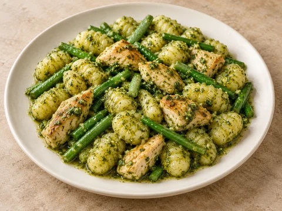
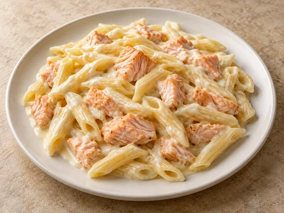
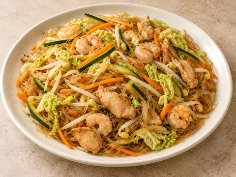
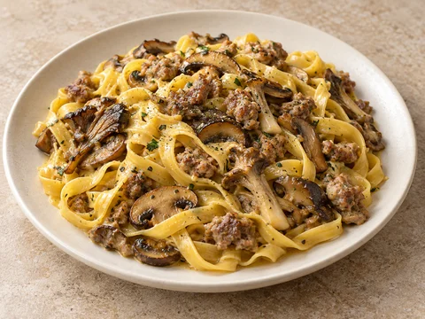
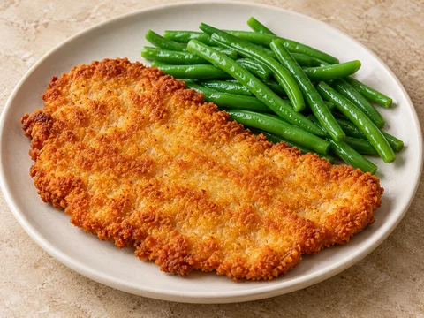
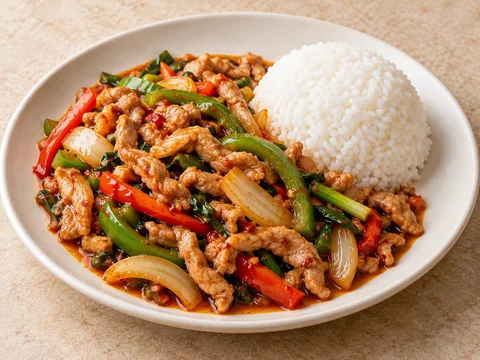
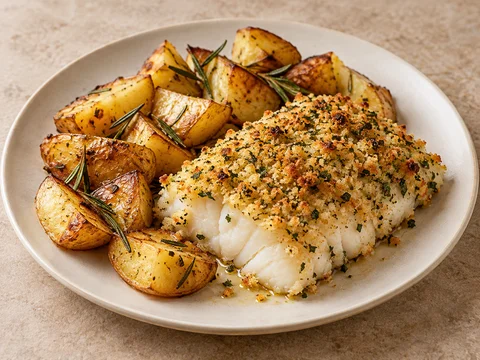
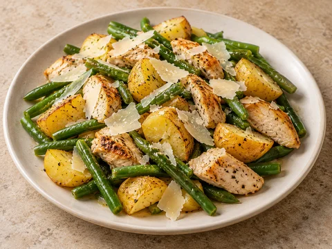
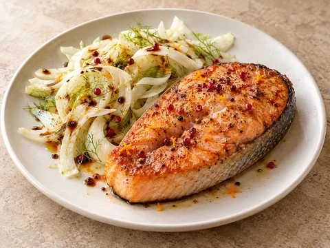

Gnocchi di patate al pesto genovese con pollo e fagiolini
Gnocchi di patate con pesto genovese, pollo e fagiolini.
0107
Valido solo a pranzo,
nel giorno sotto indicato

Gnocchi di patate con pesto genovese, pollo e fagiolini.
0107

Penne avvolte da una delicata panna con salmone fresco.
010407

Spaghetti di soia saltati con zucchine, carote, verza, soia, pollo e gamberetti*.
0206

Tagliatelle con funghi misti e salsiccia.
0103

Milanese di pollo dorata, accompagnata da fagiolini lessi.
0103

Straccetti di maiale con verdure e salsa piccante, accompagnati da riso bianco al vapore.

Merluzzo* gratinato al forno con erbette aromatiche, accompagnato da patate al rosmarino.
0104

Patate, fagiolini e pollo in un’insalata tiepida, completata da scaglie di Grana.
07

Trancio di salmone all’arancia e pepe rosa, accompagnato da finocchi crudi all’aceto balsamico.
04
Le immagini dei piatti, pur realistiche, sono generate con intelligenza artificiale e hanno scopo illustrativo.
Attendere la conferma del Ristorante per considerare valido l’ordine.
Persone indicate nelle richieste via WhatsApp: 0
Dato indicativo: richieste avviate, non prenotazioni confermate. Azzeramento ogni giorno alle 15:00.